Food for Future Thoughts
What will we eat in the future, and how do we imagine that future today? Food for Future Thoughts is an experimental mediation project designed to involve young people as active participants in the discourse on future food culture.
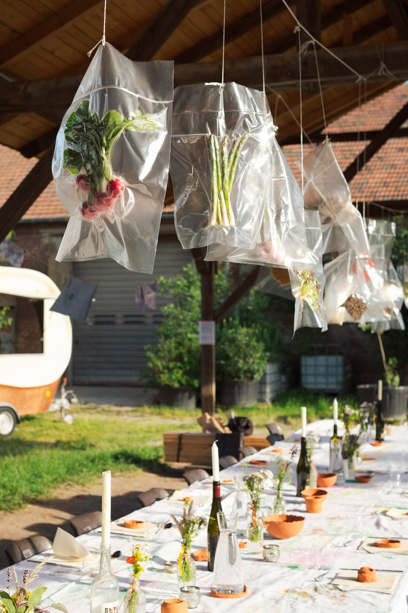
This experiential and speculative design project, developed in collaboration with culinary and fashion students, explores how our dietary needs and interests might evolve. Through workshops and a "Farm to Fork" banquet, the project preserves the thoughts and culinary identities of young people, making their visions for the future of food tangible.
Collaborative Workshops. In partnership with gastronomy students from HLMW9, the project used workshops to discuss the eating cultures of the past and present, exploring ways to preserve traditions while envisioning future perspectives.
Speculative Scenarios. Using AI tools like Midjourney, the students' thoughts, fears, and priorities were translated into visual scenarios, revealing possible developments in future dietary habits and lifestyles.
"Farm to Fork" Dinner: The process culminated in a self-organized banquet where various stations represented the cultural diversity of the class, merging traditional culinary skills with forward-looking ideas.
The Act of Preservation. To "conserve" the event, individual thoughts, menu identities, and atmospheric impressions were vacuum-sealed, creating a metaphorical time capsule of the students' creativity and the evening's impact.
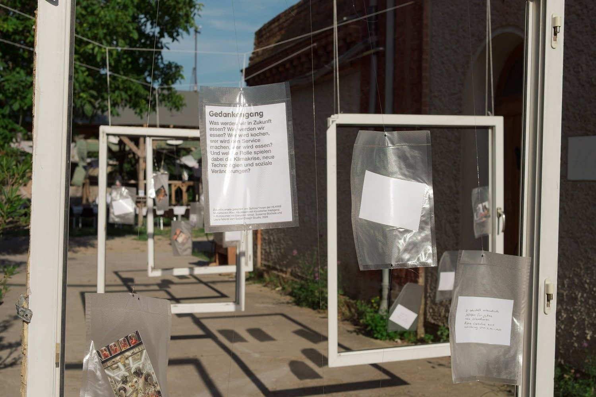
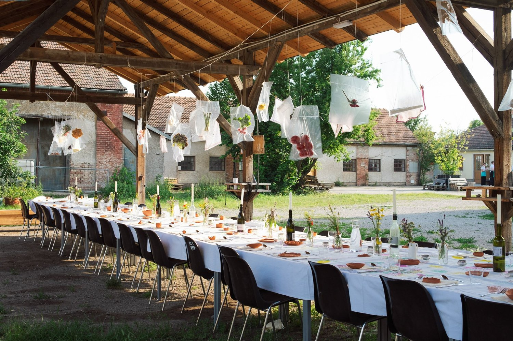
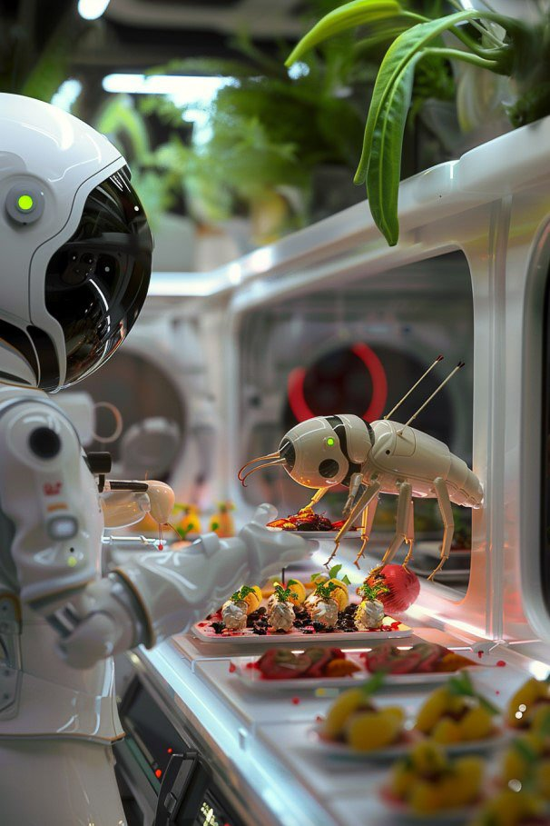
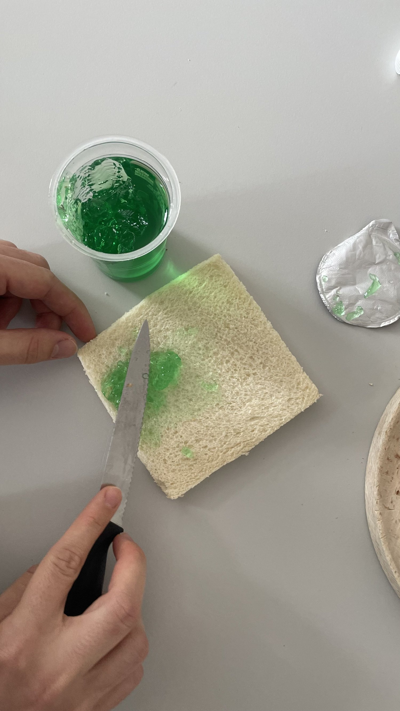
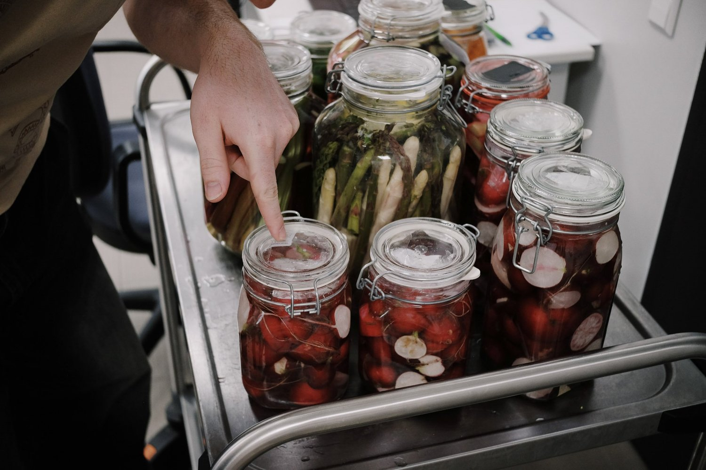
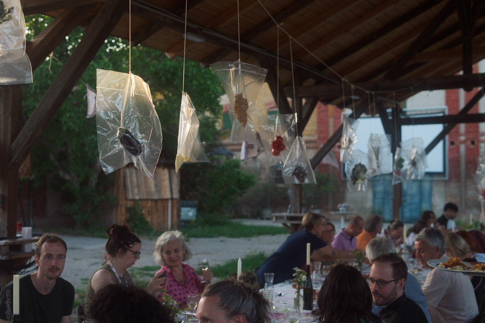
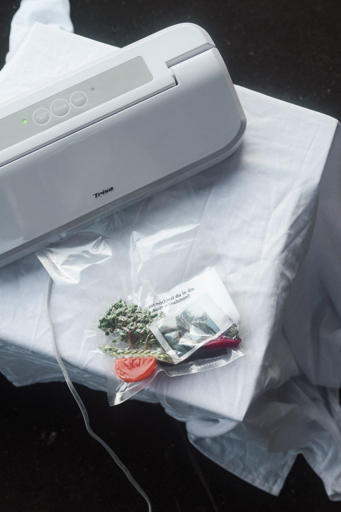
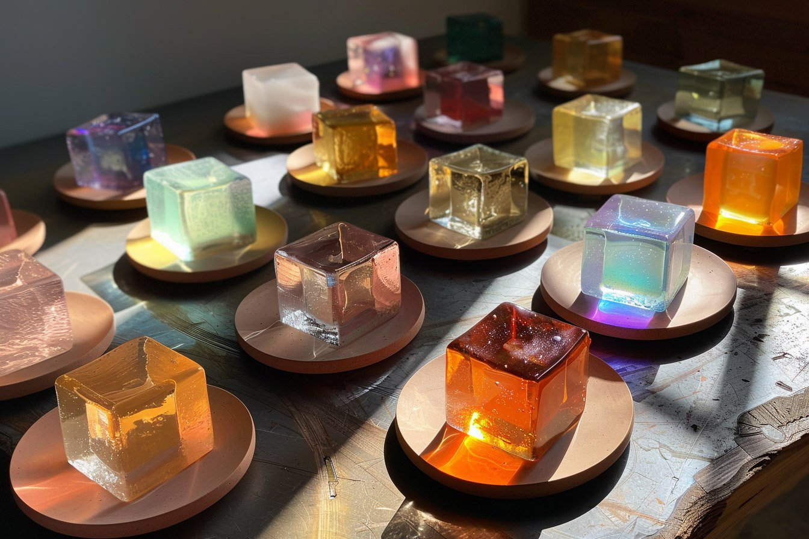
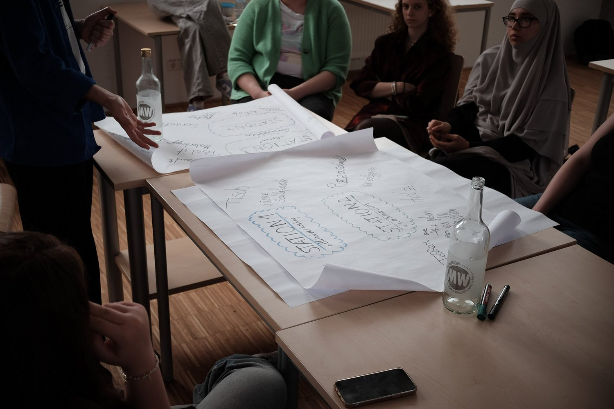
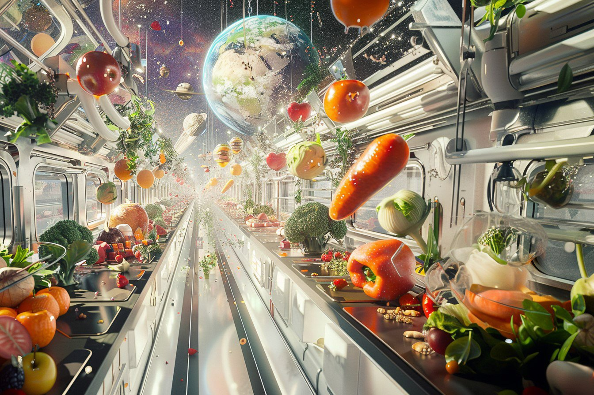
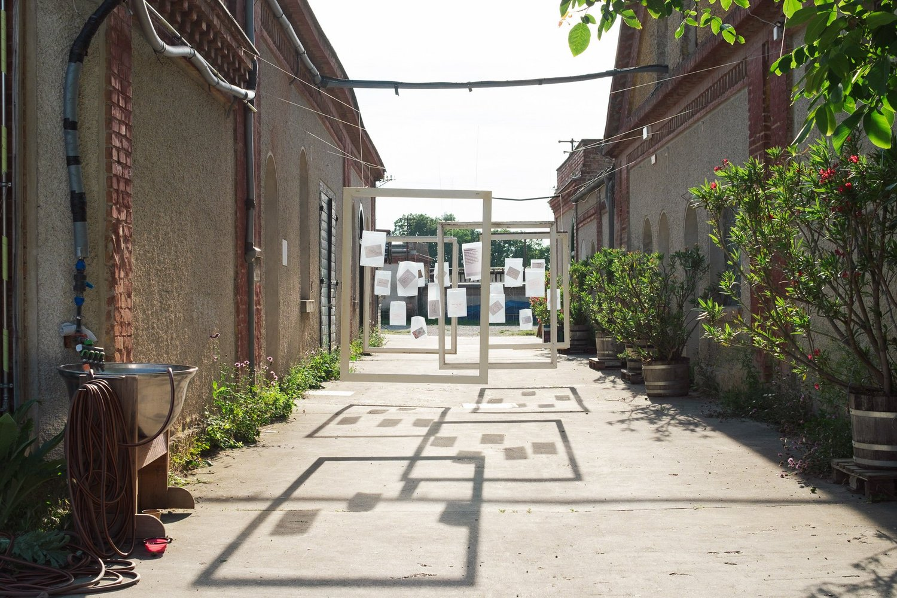
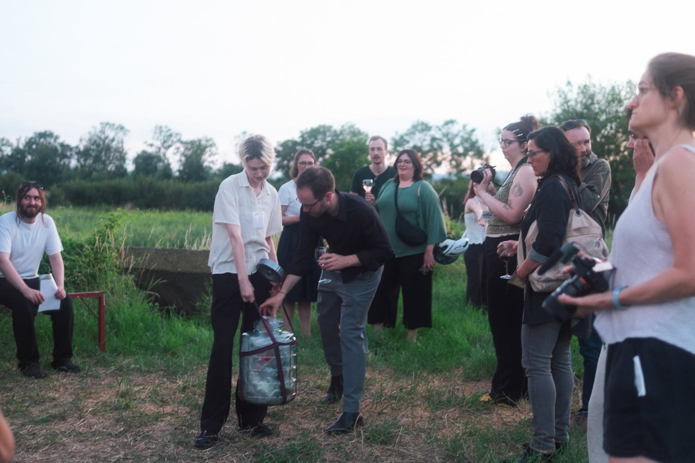
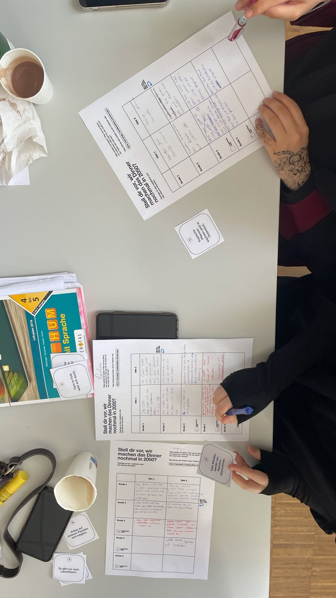
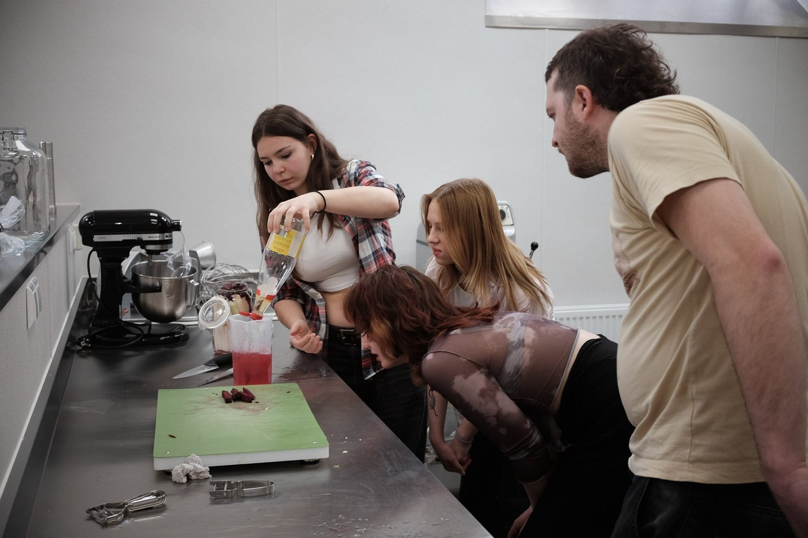
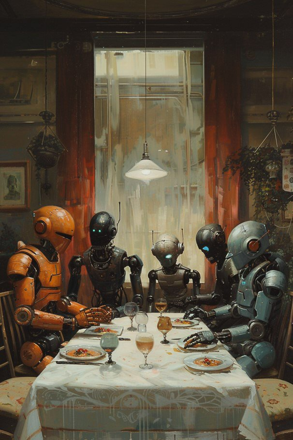